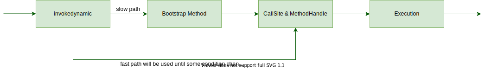

Java 中的 lambda 表达式如何工作？
lambda 表达式在 Java 代码和 JVM 内部是什么样的？显然，它是某种类型的值，而 Java 只允许两种类型的值：原始类型和对象引用。lambda 显然不是原始类型，因此 Lambda 表达式必须是某种返回对象引用的表达式。
让我们看一个例子：
1 | public class LambdaExample { |
熟悉内部类的程序员可能会猜测 lambda 实际上只是 Runnable 匿名内部类的语法糖。但是，编译以上类将生成一个文件：LambdaExample.class。该类中并没有其他类文件。
这意味着 lambda 不是内部类。相反，它们必须是其他某种机制。实际上，通过 javap -c -p 反编译字节码揭示了两件事。
首先是以下事实：lambda 主体已被编译为私有的静态方法，该方法出现在主类中：
1 | private static void lambda$main$0(); |
关于字节码的第二件事要注意的是 main 方法的形式：
1 | public static void main(java.lang.String[]) throws java.lang.Exception; |
请注意，字节码以 invokedynamic 调用开始。此操作码已添加到版本 7 的 Java 中（这是有史以来唯一添加到 JVM 字节码的操作码）。我在“使用 ASM 的操作字节码”和“了解使用 invokedynamic 进行 Java 方法调用”中讨论了方法调用，您可以将其作为本文的附带内容阅读。
理解此代码中的 invokedynamic 调用的最直接方法是将其视为对某种特殊形式的 factory 方法的调用。方法调用返回实现 Runnable 的某种类型的实例。确切的类型没有在字节码中指定，从根本上来说也没什么关系。
实际类型在编译时不存在，将在运行时按需创建。为了更好地说明这一点，我将讨论三种结合使用以实现该效果的机制：调用站点(call sites)，方法句柄(method handles)和引导程序(bootstrapping)。
🤔 句柄这个翻译有点生涩，直接理解 Handle 即可。
Call sites
字节码中方法调用指令发生的位置称为调用站点。
调用站点持有一个 MethodHandle 变量，作为它的调用目标，链接到调用站点的 invokedynamic 调用将会全部委托给 MethodHandle。调用站点可能和多个 invokedynamic 关联，也可能是“自由浮动”的，没有任何关联。无论哪种情况，它都可以通过 dynamic Invoker 方法来调用。
传统上，Java 字节码具有四个处理不同方法调用情况的操作码：
- (invokestatic) 静态方法，用于调用类方法
- (invokevirtual) “常规”调用，用于调用对象的实例方法（可能涉及方法重写的虚拟调用）
- (invokeinterface) 接口查找，用以调用接口方法，在运行时搜索一个实现了这个接口方法的对象，找出适合的方法进行调用。
- (invokespecial) “特殊”调用，用于调用一些需要特殊处理的实例方法（对于不需要重写解析的情况，例如超类调用和私有方法）。
(invokedynamic) 相比于之前的四条指令，他们的分派逻辑都是固化在 JVM 内部，而 invokedynamic 则用于处理新的方法分派：它允许应用级别的代码来确定执行哪一个方法调用，只有在调用要执行的时候，才会进行这种判断，从而达到动态语言的支持。
在这里，invokedynamic 调用站点在 Java 堆中表示为 CallSite 对象。这并不奇怪：自 Java 1.1 开始，Java 就使用了反射 API 做类似的事情，其中包含诸如 Method 之类的类型，Java 在运行时具有许多动态行为，因此 Java 现在正在对调用站点以及其他运行时类型信息进行建模的想法应该就不足为奇了。
每个 invokedynamic 指令的调用被称为动态调用站点（dynamic call site），动态调用站点最开始是未链接的状态，在这种状态下，调用站点没有要调用的目标方法。在 JVM 可以执行动态调用站点（invokedynamic 指令）之前，必须首先链接调用站点。链接是通过调用 bootstrap 方法来完成的，该方法获得调用站点的静态信息内容，并且必须生成一个提供调用站点行为的方法句柄（method handle）。
当执行到 invokedynamic 指令时，JVM 会找到相应的调用站点对象（或者，如果以前从未执行过此调用站点，它将创建一个新对象）。
调用站点对象是必要的间接级别，允许关联的调用目标（即方法句柄）随时间变化。
CallSite（抽象类）有三个可用的子类：ConstantCallSite，MutableCallSite 和 VolatileCallSite。基类仅具有包访问权限构造函数，而三个子类型具有公共构造函数。这意味着 CallSite 不能由用户代码直接子类化，但是可以继承其子类。例如，JRuby 语言使用 invokedynamic 作为其实现的一部分，并继承了 MutableCallSite 子类。
注意：某些 invokedynamic 调用站点实际上只是延迟计算，并且目标对象的方法在第一次执行后就不会改变。这是 ConstantCallSite 的非常常见的用例，其中包括 lambda 表达式。
这意味着在程序的整个生命周期中，非常量调用站点可以改变不同的方法句柄作为其目标 setTarget(MethodHandle newTarget)，新目标必须与前一个目标具有相同的方法类型（MethodType）。
Method handles
反射是一种用于执行运行时技巧的强大技术，但它具有许多设计缺陷。反射的一个关键问题是性能，尤其是因为即时调用（JIT）编译器难以内联（inlining）反射调用。
这很不好，因为内联在几种方面对 JIT 编译非常重要，其中最重要的一点是因为内联通常是首次应用优化，并且为其他技术打开了大门（例如转义分析和无效代码消除）。
第二个问题是，每次遇到 Method.invoke() 的调用站点时，都会链接反射调用。例如，这意味着执行安全访问检查。这是非常浪费的，因为在第一次调用时检查通常会成功还是失败，并且如果成功，它将在程序的整个生命周期中继续这样做。然而，反射却又一次又一次地链接调用。因此，反射通过重新链接和浪费 CPU 时间而导致许多不必要的成本。
为了解决这些问题（以及其他问题），Java 7 引入了一个新的 API，即 java.lang.invoke，由于它引入的主类的名称，通常将其称为方法句柄 (method handles)。
方法句柄（MH）是 Java 版本的类型安全的函数指针。类似于 Java 反射中的 Method 对象。MH 具有实际上与反射执行底层方法相同的 invoke() 方法。
一方面，MH 实际上只是一种更有效的反射机制，它更接近本质。反射 API 中由对象表示的任何内容都可以转换为等效的 MH。例如，可以使用 Lookup.unreflect(Method m) 将反射方法对象转换为 MH。创建的 MH 通常是访问基础方法的更有效方法。
可以通过 MethodHandles 类中的静态辅助方法以多种方式来修改 MH，例如通过组合和方法参数的部分绑定（柯理化），它还提供了一个静态的查询工厂类用于构建方法句柄。
通常，方法链接需要类型描述符的精确匹配。但是，MH 上 的 invoke() 方法具有特殊的多态签名，无论调用的方法的签名如何，都允许进行链接。
在运行时，invoke() 调用站点上的签名应该看起来和你正在直接调用引用的方法一样，这避免了反射调用通常会发生的类型转换和自动装箱成本。
由于 Java 是一种静态类型的语言，因此出现了一个问题，即当使用这种动态的机制时，可以保留多少类型安全性。MH API 通过使用一种称为 MethodType 的类型来解决此问题，该类型是方法采用的参数的不可变表示：方法的签名。
MH 的内部实现在 Java 8 的生命周期内进行了更改。新的实现称为 lambda 形式，它提供了显着的性能提升，现在 MH 在许多用例中都比反射更好。
Bootstrapping
字节码指令流中第一次遇到每个特定的 invokedynamic 调用站点时，JVM 不知道它的目标是哪个方法。实际上，没有与该指令关联的调用站点对象。
调用站点需要被*引导（bootstrapped）*来完成链接，并且 JVM 通过运行引导方法 bootstrap method（BSM）生成并返回调用站点对象来实现此目的。
每个 invokedynamic 调用站点都有与其关联的 BSM，该 BSM 存储在类文件的单独区域中。这些方法允许用户代码在运行时以编程方式确定链接。
链接首先解析引导方法的常量池条目，并解析动态调用站点的类型描述符的 MethodType 对象。此解析过程可能会触发类加载。因此，如果类加载失败，它可能会引发错误。链接不会触发类初始化。
反编译 invokedynamic 调用（例如我在 Runnable 的原始示例中的调用）表明它具有以下形式：
1 | 0: invokedynamic #2, 0 |
在类文件的常量池中，请注意，条目 #2 是类型 CONSTANT_InvokeDynamic 的常量。常量池的相关部分如下：
1 | #2 = InvokeDynamic #0:#31 |
常数中存在 0 是一个提示。常量池条目从 1 开始编号，因此 0 会提醒您实际的 BSM 位于类文件的另一部分。
对于 lambda，NameAndType 条目采用特殊形式。名称是任意的，但是类型签名包含一些有用的信息。
返回类型对应于 invokedynamic 工厂的返回类型。它是 lambda 表达式的目标类型。同样，参数列表由 lambda 捕获的元素类型组成。对于无状态 lambda，返回类型将始终为空。只有 Java 闭包才会有参数存在。
BSM 至少需要接受三个参数并返回 CallSite。标准参数是以下类型：
MethodHandles.Lookup：发生调用站点的类上的查找对象String:NameAndType中提到的名称MethodType：NameAndType中的已解析类型描述符
除了这几个参数，后面的参数是 BSM 所需的任何其他参数。这些在文档中称为附加静态参数。
BSM 的普遍用例允许一种非常灵活的机制，非 Java 语言实现者可以使用这种机制。但是，Java 语言没有提供用于生成任意 invokedynamic 调用站点的语言级别的构造。
对于 lambda 表达式，BSM 采用一种特殊形式，为了充分理解该机制的工作原理，我将对其进行更仔细的研究。
解码 lambda 的 bootstrap 方法
对 javap 使用 -v 参数可查看引导程序方法。这是必需的，因为引导程序方法位于类文件的特殊部分中，并且将引用返回到主常量池中。对于这个简单的 Runnable 示例，它有一个引导程序方法（BSM）：
1 | BootstrapMethods: |
有点难以理解，所以让我们对其进行解码。
此调用站点的引导方法是常量池中的条目 #28。这是 MethodHandle 类型的条目（一种常量池类型，已在 Java 7 中添加到标准中）。现在，将其与字符串函数示例的情况进行比较：
1 | 0: #27 REF_invokeStatic java/lang/invoke/LambdaMetafactory.metafactory: |
将用作 BSM 的方法句柄与静态方法 LambdaMetafactory.metafactory(...) 相同。
更改的部分是方法参数。这些是 lambda 表达式的附加静态参数，其中有三个。它们代表了 lambda 的签名以及 lambda 实际最终调用目标的方法句柄：lambda 主体。第三个静态参数是签名的擦除形式。
让我们将代码跟随到 java.lang.invoke 中，看看平台如何使用 metafactories 来动态实际实现 lambda 表达式目标类型的类。
The lambda metafactories
在 lambda 表达式将被捕获的点上，它会生成一个 invokedynamic 调用站点，该站点在被调用时返回 lambda 正在转换为的函数接口的实例。此调用站点称为给定 lambda 的 lambda 工厂。lambda 工厂的动态参数是从词法作用域中捕获的值。lambda 工厂的 bootstrap 方法是 Java 语言运行库中的标准化方法，称为 lambda 元工厂。静态引导程序参数在编译时捕获有关 lambda 的已知信息（它将被转换为的功能接口、脱糖 lambda 主体的方法句柄、有关 SAM 类型是否可序列化的信息等）。
BSM 对此静态方法进行调用，该方法最终返回调用站点对象。当执行 invokedynamic 指令时，调用站点（Call Site）中包含的方法句柄（Method Handle）将返回一个实现 lambda 目标类型的类的实例。
lambda 元工厂 metafactory 方法的源代码相对简单：
1 | public static CallSite metafactory(MethodHandles.Lookup caller, |
查找对象对应于 invokedynamic 指令所在的上下文。在这种情况下，就是定义 lambda 的同一个类，因此查找上下文将具有访问 lambda 主体编译成的私有方法的正确权限。
调用的名称和类型由 VM 提供，并且是实现的详细信息。最后三个参数是 BSM 的其他静态参数。
在当前的实现中，metafactory 将代码委派给使用 ASM 字节码库的内部拷贝的代码，以编织实现目标类型的内部类。
如果 lambda 没有从其封闭范围中捕获任何参数，则结果对象是无状态的，因此该实现可通过预先计算单个实例来进行优化 - 有效地将 lambda 的实现类设为单例：
1 | Function<String, Integer> makeFn() { |
这是文档强烈劝阻 Java 程序员不要依赖任何形式的 lambda 身份语义的原因之一。
翻译策略
我们可以通过多种方式在字节码中表示 lambda 表达式，例如内部类、方法句柄、动态代理等。这些方法中的每一种都有优点和缺点。在选择策略时，有两个相互竞争的目标：通过不承诺特定策略来最大化未来优化的灵活性，以及在类文件表示中提供稳定性。我们可以通过使用 JSR 292 的 invokedynamic 特性来实现这两个目标将字节码中 lambda 创建的二进制表示与在运行时评估 lambda 表达式的机制分开。我们没有生成字节码来创建实现 lambda 表达式的对象（例如调用内部类的构造函数），而是描述了构造 lambda 的方法，并将实际构造委托给语言运行时。该配方被编码在 invokedynamic 指令的静态和动态参数列表中。
invokedynamic 的使用让我们将翻译策略的选择推迟到运行时。运行时实现可以自由地动态选择策略来评估 lambda 表达式。运行时实现选择隐藏在用于 lambda 构造的标准化（即平台规范的一部分）API 之后，以便静态编译器可以发出对该 API 的调用，并且 JRE 实现可以选择其首选的实现策略。该 invokedynamic 机制允许在没有这种后期绑定方法可能强加的性能成本的情况下完成此操作。
总结
一旦 JVM 第一次看到 invokedynamic，它就会调用 bootstrap 引导方法，该引导方法告诉调用指令真正调用的方法类型是什么，如何查找该方法等。有了这些信息，我们就可以在运行时动态的链接到该调用方法，链接行为发生在 CallSite 上，并返回去做真正调用处理的 MH。
在撰写本文时，lambda bootstrap 方法将使用 metafactory 的 InnerClassLambdaMetafactory 在运行时使用 ASM 字节码操作库为 lambda 生成内部类，然后 bootstrap 方法将生成的内部类封装在称为 ConstantCallSite 的特殊类型的 CallSite 中，CallSite 的 target MethodHandle 将返回一个实现 lambda 目标类型的类的实例。这种类型的 CallSite 在设置后永远不会改变。因此，在对每个 lambda 进行首次链接后，JVM 将始终使用快速路径直接调用 lambda 实例逻辑。

尽管这是最有效的 invokedynamic 类型，但它肯定不是唯一可用的选项。事实上，Java 提供了 MutableCallSite 和 VolatileCallSite 来适应更多的动态需求。
结束
本文探讨了 JVM 如何实现对 lambda 表达式的支持的详细细节。这是您将要遇到的更复杂的平台功能之一，因为它深入到语言实现者的领域。
一路上，我讨论了 invokedynamic 和方法句柄 API。这是现代 JVM 平台的主要部分的两项关键技术。这两种机制都在整个生态系统中得到了越来越多的使用。例如，在 Java 9 及更高版本中，invokedynamic 已用于实现新形式的字符串连接。
了解这些功能可以使您深入了解 Java 应用程序所依赖的平台和现代框架的最深层运作。
原文链接：Behind the scenes: How do lambda expressions really work in Java?